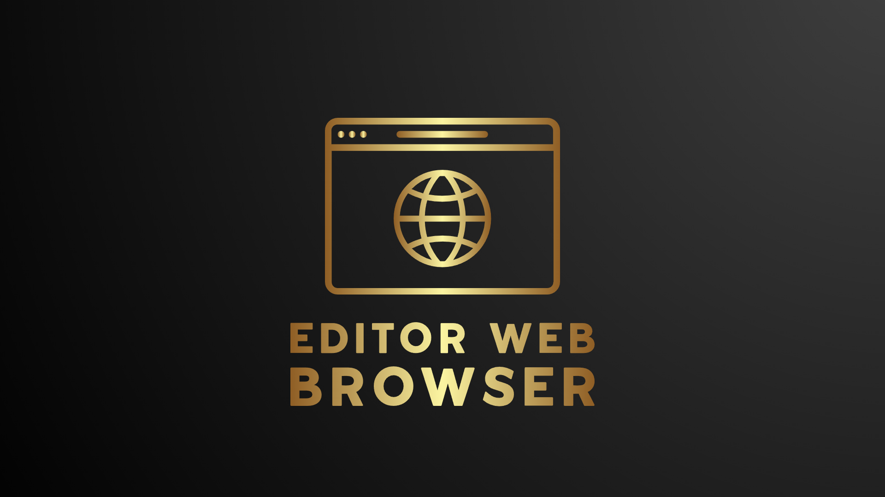
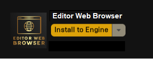
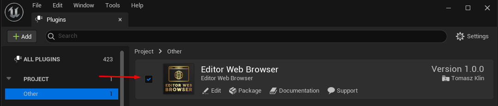
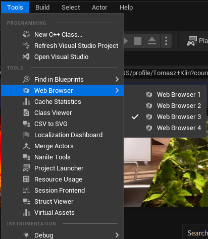
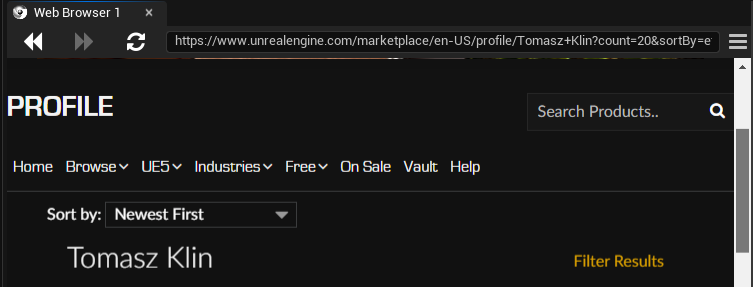

Editor Web Browser puts a web browser inside the Unreal Editor, as an ordinary tab you can dock, float and arrange like any other. Up to four browsers can be open at once, and they remember your session: a site you signed into today is still signed in tomorrow, after the editor has been closed and reopened.


Open a browser from Tools -> Web Browser. Four are available, Web Browser 1 through Web Browser 4.

Each one is a normal editor tab: dock it beside the viewport, drag it onto a second monitor, or leave it floating, and the editor layout remembers where you put it. With a single browser open the tab is simply called Web Browser — the numbers appear only once a second one is open, so there is nothing to think about until you need it.
All four share one browsing session, so a site you sign into in one is signed in in the others.

From the left: back and forward through the pages you have visited, home to return to your homepage, and reload, which turns into a stop button while a page is still loading. Then the address bar — type a URL and press Enter to go there.
The star on the right of the address bar adds the current page to your favourites, and removes it again if it is already there.
The menu button at the far right of the toolbar opens the rest:
Favourites and history are saved as you go, and are there the next time you open the editor.
The browser keeps its cookies between sessions. Sign into a wiki, a task tracker, a documentation site or your own web tools once, and you stay signed in across editor restarts — which is the difference between this and keeping a separate browser window next to the editor.
The session is stored outside your project, so it is not something that can end up in your project's source control.
While you are typing into a web page, a keystroke like Ctrl+S is ambiguous: the page may want it, and so may the editor. Capture Editor Shortcuts, in the toolbar menu, decides which one wins.
| Setting | What happens |
|---|---|
| On (default) | The page receives the keystroke. Editor shortcuts do not fire while you are using the browser. |
| Off | The editor's shortcuts keep working, and the page only receives keys the editor does not claim. |
Leave it on if you use web applications in the browser; turn it off if you mostly read pages and would rather keep your editor shortcuts to hand.